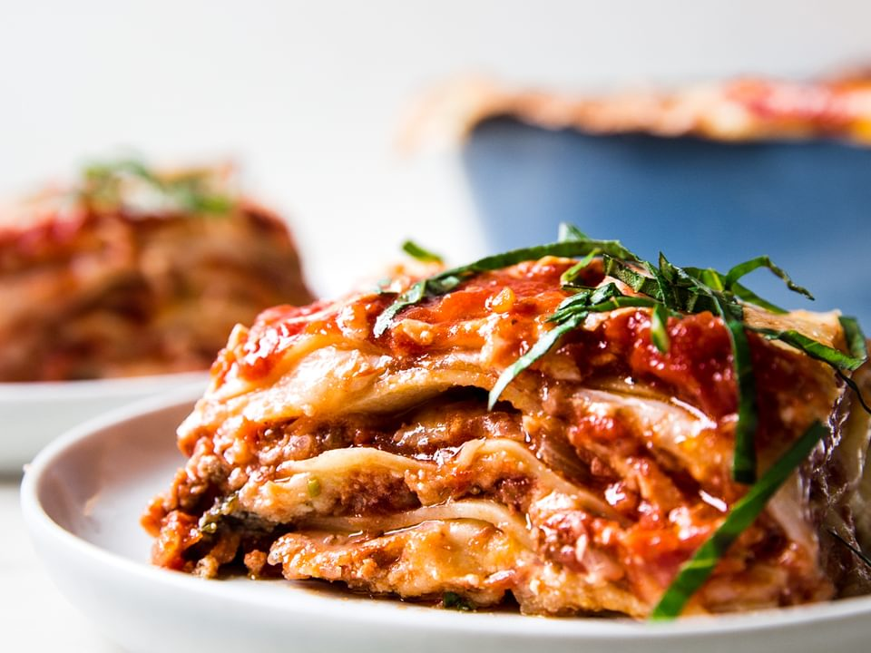

Lasagna Recipe

Description:
One of the best recipes you'll find out there, on the internet, on how to make the ultimate lasagna.
For this recipe, we are essentially making a thick, meaty tomato sauce and layering that with noodles and cheese
into a casserole.
Ingredients:
- 2 teaspoons extra virgin olive oil
- 1 pound ground beef chuck
- 1/2 medium onion, diced (about 3/4 cup)
- 1/2 large bell pepper (green, red, or yellow), diced (about 3/4 cup)
- 2 cloves garlic, minced
- 1 (28-ounce)can good-quality tomato sauce
- 3 ounces tomato paste (half a 6-ounce can)
- 1 (14 ounce) can crushed tomatoes
- 2 tablespoons chopped fresh oregano, or 2 teaspoons dried oregano
- 1/4 cup chopped fresh parsley (preferably flat leaf), packed
- 1 tablespoon Italian seasoning
- 1 pinch garlic powder and/or garlic salt
- 1 tablespoon red or white wine vinegar
- 1 tablespoon to 1/4 cup sugar (to taste, optional)
- Salt
Steps:
- Combine pork and ground beef in a large, deep skillet over medium-high heat; cook and stir until browned and
crumbly, 5 to 7 minutes. Add onion and cook until translucent, about 5 minutes.
-
Stir in crushed tomatoes, tomato sauce, 1 tablespoon fresh parsley, garlic, basil, salt, oregano, and sugar.
Reduce heat to medium-low and simmer, stirring occasionally, for 30 minutes.
-
While the sauce is simmering, bring a large pot of lightly salted water to a boil. Cook lasagna noodles in
the boiling water, stirring occasionally, until tender yet firm to the bite, 8 to 10 minutes. Drain and set
aside.
-
While the noodles are cooking, preheat the oven to 375 degrees F (190 degrees C).
-
Mix cottage cheese, Parmesan cheese, eggs, remaining 1 tablespoon fresh parsley,
salt, and
pepper in a large
bowl until combined.
-
Assemble lasagna: Spread a spoon or two of sauce over the bottom of a 9x13-inch baking dish just to to coat
it. Place two layers of noodles over the sauce to cover.
Layer with 1/2 of the cheese mixture, 1/2 of
the
remaining sauce, and 1/2 of the mozzarella cheese. Repeat layers once more using the remaining noodles,
cheese mixture, sauce, and mozzarella. Cover the baking dish with aluminum foil.
-
Bake in the preheated oven for 30 to 40 minutes. Remove the foil and bake until
cheese is golden brown, 5 to
10 more minutes.
-
Remove from the oven and let stand for 10 minutes before cutting and serving.